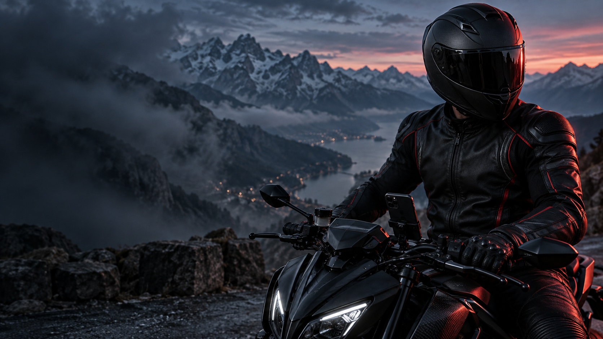
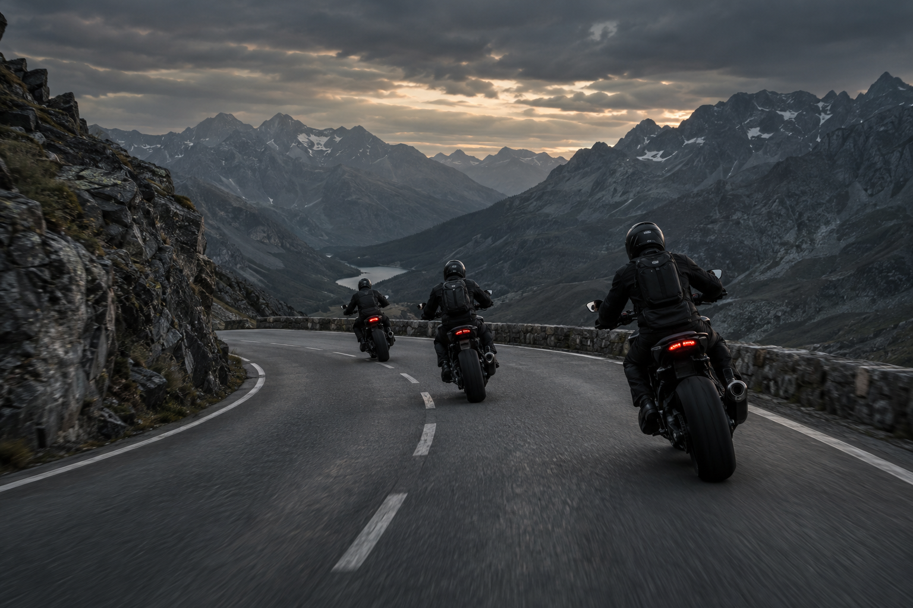

LA ROUTE T’APPELLE.
ÉCOUTE
L’APPEL.
TA MOTO. TA ROUTE. TA MEUTE.
Choisis ta sortie. Retrouve ta meute.
Partage les routes qui valent le détour.
MISE EN SCÈNE CONCEPTUELLE · CAPTURE RÉELLE DE L’APP
LA ROUTE EST LE DÉBUT. LA MEUTE FAIT LE RESTE.
FONCTIONNALITÉS EN DÉVELOPPEMENT · APERÇUS ILLUSTRATIFS
01 / TROUVE TA MEUTE
LES BONS VIRAGES.
LES BONNES
PERSONNES.
Crée ta meute, rassemble tes potes ou rejoins des motards qui partagent tes envies de sortie. Le prochain départ se prépare ensemble.
- 01 Crée ou rejoins une meute.
- 02 Organisez votre prochaine sortie.
- 03 Retrouvez les routes et les photos du groupe.

UN APERÇU DE TA FUTURE MEUTELE PLAN DU WEEK-END ?
PARTIR ENSEMBLE.
Un point de départ.
Toute la meute.
02 / CHOISIS TA SORTIE
AUJOURD’HUI,
TU ROULES
COMMENT ?
Des virages à enchaîner, un trajet plus direct ou une balade pour déconnecter. Choisis le type de parcours qui correspond à ton envie du jour.
Le plaisir des virages.
Privilégie les routes sinueuses et les détours qui donnent envie de repartir.
TRACÉS ILLUSTRATIFS · APERÇU DU CHOIX D’ITINÉRAIRE
03 / PRÉVIENS LES AUTRES
UN DANGER REPÉRÉ.
LA MEUTE
INFORMÉE.
Gravillons, obstacle, chaussée dégradée… partage les dangers rencontrés et retrouve les signalements des autres motards sur ton parcours.
Vu par l’un. Utile à tous.
- Gravillons
- Obstacle
- Chaussée dégradée
SUR TON PARCOURS
Gravillons sur la route
Un motard partage l’info.
Tu sais à quoi t’attendre.
APERÇU ILLUSTRATIF · FONCTIONNALITÉ EN DÉVELOPPEMENT
LES PREMIERS KILOMÈTRES S’ÉCRIVENT MAINTENANT.
PRENDS
TA PLACE.
On cherche nos 100 premiers motards.
Aide-nous à construire les sorties, les meutes
et le partage entre motards.
LE PROCHAIN DÉPART ?
AVEC TOI.
Reçois les nouvelles de la bêta et les modalités d’accès aux tests.
Le formulaire MailerLite se charge à ta demande. L’app est en développement ; l’inscription ne donne pas un accès immédiat aux tests.
contact@ironpack.app ↗